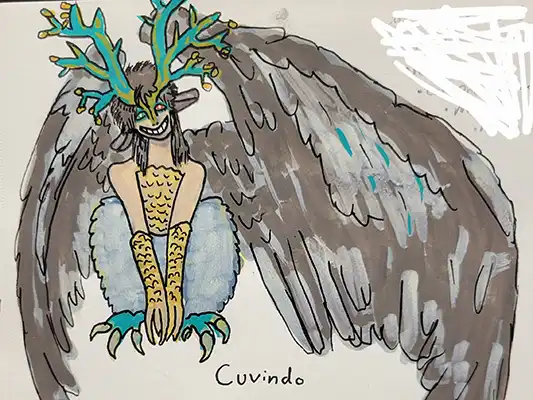
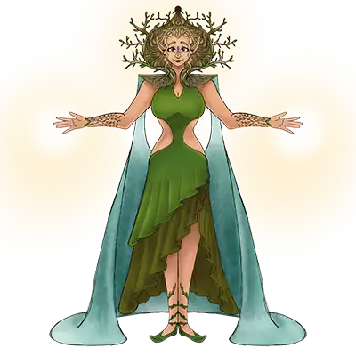
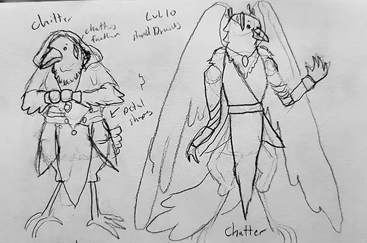
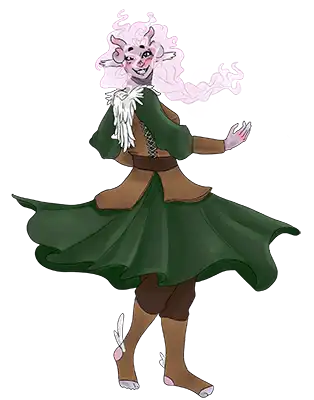
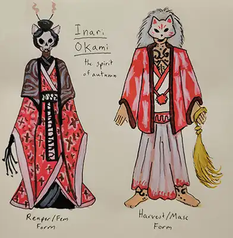
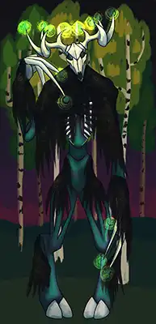
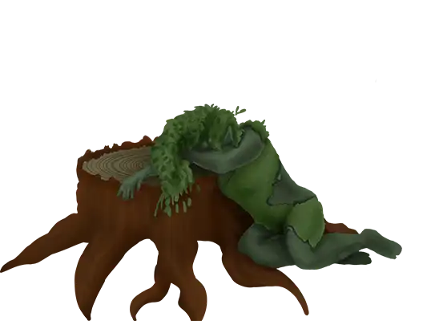
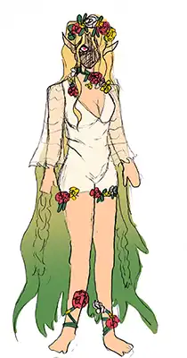
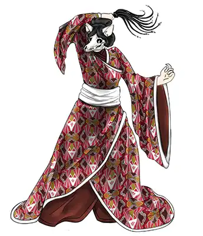

Babushka Druadel, the winter hag and quest-giver. Paint marker on Paper 2026

Cuvindo, He Who Hides, in his harpy form. Paint marker on paper 2026The Amenya of the New Willow Clan, Katyana "kat" Radimova Henthorn Fergenoriel of the Fellowship of Nochlie, and her familiar, Dogg the Shrike. Paint marker on paper 2026

Queen Titania, high goddess of all fey. Done on IbisPaintX 2025

The druids Chitter (left) and Chatter (right). Pencil on paper 2025

Nessie the Swanmay, a rowdy but sweet planetouched horizon walker. Done on IbisPaintX 2025Bailee the Tiefling girl, 15 years old and a master of illusions. Done on IbisPaintX 2026

Inari Okami, the spirit of Autumn. Shown in her Reaper form and his Harvest form, respectively. Paint pen on paper 2026

art by a friend (Trex), another form of Puck this time a spooky humanoid fey deer. Digital art 2025

The death of Meliae the Dryad, whose life was cut short due to her meddlings in Puck's affairs. Done on IbisPaintX 2025the lovely ladies from Pixity! Hipster Layla and her beecat Bumble, Pipsy the partygirl, and Lassita the barista! Pen on paper 2025

Verenestra, the Silver Princess, daughter of Titania and Oberon, the archfey of desire and ruler of the Spring Court. Drawn traditionally with pencil on paper, then colored digitally via IbisPaintX 2025

Inari Okami, in her reaper form sporting a kimono with a custom pattern (also made by me). Pattern done on Illustrator, drawing done on IbisPaintX 2026